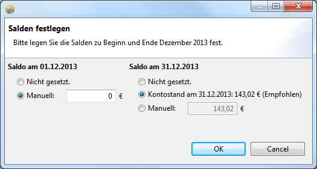

Diese Ansicht wird verwendet, um die monatlichen, finanziellen Aktivitäten zu planen, nachzuverfolgen und zu kontrollieren.
Die Ansicht ist vertikal in zwei Teile unterteilt. Der obere Teil ist die Plan-Übersicht. Er zeigt die Navigationselemente zur Monatsauswahl und die Basiswerte Ihrer Planung an. Der untere Teil enthält die geplanten und getätigten Transaktionen des ausgewählten Monats.
Dieser Teil fasst Ihre Planung zusammen, so dass Sie den finanziellen Status des ausgewählten Monats sehen können.
| Wert | Beschreibung |
|---|---|
| Saldo am <Monatsersten> | Der Eröffnungs-Saldo des Monats |
| Aktueller Saldo | Der aktuelle Saldo, der RsBudget bekannt ist. |
| Saldo am <Monatsletzten> | Der Schluss-Saldo des Monats. Solange der Monat nicht abgeschlossen ist (siehe Kontosalden festlegen), handelt es sich um eine Vorhersage. |
| Offene Posten | Die Summe der noch offenen Positionen. Der Wert reflektiert die noch zu erwartenden tatsächlichen Buchungen in diesem Monat. |
| G/V relativ | Die Gewinn- und Verlustrechnung für den Monat. Solange der Monat nicht abgeschlossen ist (siehe Kontosalden festlegen), handelt es sich um eine Vorhersage. |
| G/V absolut | Die Differenz zu Ihrere individuellen Gewinn/Verlust-Schwelle. Solange der Monat nicht abgeschlossen ist (siehe Kontosalden festlegen), handelt es sich um eine Vorhersage. |
| Ausgaben Soll | Die Summe aller geplanten Ausgaben. |
| Einnahmen Soll | Die Summe aller geplanten Einnahmen. |
| G/V Soll | Die Gewinn- und Verlustrechnung, wie sie geplant wurde. |
| Ausgaben Ist | Die Summe aller bisher getätigten Ausgaben. |
| Einnahmen Ist | Die Summe aller tatsächlichen Einnahmen. |
| G/V Ist | Die Gewinn- und Verlustrechnung, wie sie bisher ausfällt. |
Die Buchungstabelle zeigt alle geplanten und getätigten Buchungen und Budgets. Ein türkiser Hintergrund hebt Budgets hervor. Ein weißer Hintergrund kennzeichnet einzelne Buchungen. Die folgende Tabelle beschreibt die verschiedenen Werte in den jeweiligen Spalten.
| Spalte | Beschreibung |
|---|---|
| Datum | Das datum, an dem die Buchung durchgeführt wurde. Das Feld ist nur bei getätigten Buchungen gesetzt. |
| Text | Der Buchungstext |
| Details | Details und Hinweise zu dieser Buchung, z.B. Herkunft oder Referenz (optional). |
| Budget | Das Budget, zu dem diese Buchung gehört (optional). |
| Kategorie | Die Kategorie, die dieser Buchung zugeordnet ist. |
| Soll | Der geplante Wert. |
| Ist | Der Ist-Wert. Dieser Wert stellt das verbrauchte Budgets dar, wenn es sich um eine Budgetzeile handelt. |
RsBudget opens the current month by default. You can select another month by navigating with the links on top of the Summary Section.
 to select the same month of the previous year.
to select the same month of the previous year. to select the previous month.
to select the previous month. to select the next month.
to select the next month. to select the same month of the next year.
to select the same month of the next year.You'll need to create the plan for the month before you can start tracking. Click  at the
view's toolbar. The plan will be created from the General Plan.
at the
view's toolbar. The plan will be created from the General Plan.
You can delete a plan by clicking on  at the view's toolbar.
at the view's toolbar.
Erzeugen Sie eine neue Buchung, indem Sie
 direkt über der Buchungstabelle. in der Werzeugleiste der Ansicht.
direkt über der Buchungstabelle. in der Werzeugleiste der Ansicht.Einfügen-TasteAlle Methoden erzeugen eine neue Buchung am Ende der Tabelle und scrollen dorthin, falls notwendig. Die Textmarke (Cursor) ist bereits im Feld für den Buchungstext platziert, so dass Sie sofort anfangen können, Ihren Text einzugeben.
Doppelklicken Sie in der Tabelle auf den Wert, den Sie bearbeiten möchten. Je nach Spalte erscheint ein Auswahlfeld, aus dem Sie
den neuen Wert selektieren können, bzw. ein Textfeld, mit dem Sie den Text ändern können. Drücken Sie Enter,
wenn Sie Ihre Eingabe beendet haben bzw. klicken Sie mit der Maus auf eine beliebige Stelle außerhalb des Eingabefeldes. Ihre
Änderung wird sofort abgespeichert.
Sie können das Editieren abbrechen, wenn Sie Esc auf Ihrer Tastatur drücken. Ihr Änderung wird dann nicht abgespeichert.
Es ist möglich, die Reihenfolge der Buchungen zu ändern. Klicken Sie dazu mit der rechten Maustaste auf die Tabelle und
wählen Sie "Nach oben" bzw. "Nach unten", um die ausgewählte Buchung zu verschieben. Dieselbe Aktion können Sie
auch über die Tastenkombinationen Strg+↑ und Strg+↓ auslösen.
All transactions can be sorted according to their actual transaction date by clicking the  button in the view's toolbar. Planned transactions will be added to the bottom of the table, keeping the previous order of these
transactions. Budgets are always at the top of the table.
button in the view's toolbar. Planned transactions will be added to the bottom of the table, keeping the previous order of these
transactions. Budgets are always at the top of the table.
Transaktionen können in Buchungen und umgekehrt umgewandelt werden. Klicken Sie dazu mit der rechten Maustaste auf die entsprechende Zeile und wählen Sie "In Budget umwandeln" bzw. "In Buchung umwandeln".
Natürlich können Sie Buchungen und Budgets aus der Tabelle auch wieder löschen. Handelt es sich bei der zu löschenden Buchung um eine bereits getätigte Buchung (Ist-Wert gesetzt), so wird die Buchung zunächst rückgängig gemacht, so dass nur der Soll-Wert stehen bleibt (geplante Buchung). Falls die Buchung noch nicht getätigt wurde (kein Ist-Wert), dann wird die selektierte Buchung gelöscht. Nehmen Sie die Löschung vor, indem Sie
 direkt über der Buchungstabelle. in der Werzeugleiste der Ansicht.
direkt über der Buchungstabelle. in der Werzeugleiste der Ansicht.Entfernen-TasteRsBudget wird Sie nach einer Bestätigung fragen, bevor die ausgewählte Zeile gelöscht wird.
The Opening and Closing Balance of a month is kept separately. You need to define them when starting respectively finalizing the
month. Click the  button from the the view's toolbar. A separate dialog will appear.
button from the the view's toolbar. A separate dialog will appear.

The specific options vary depending on your current plan and situation. The left side defines the Opening Balance, the right side of the dialog defines the Closing Balance. You can either select a balance proposed or manually enter a specific amount for each of them. Click "OK" when you finished your input, or abort with "Cancel".